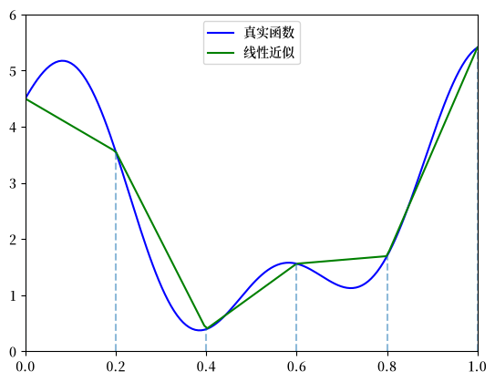
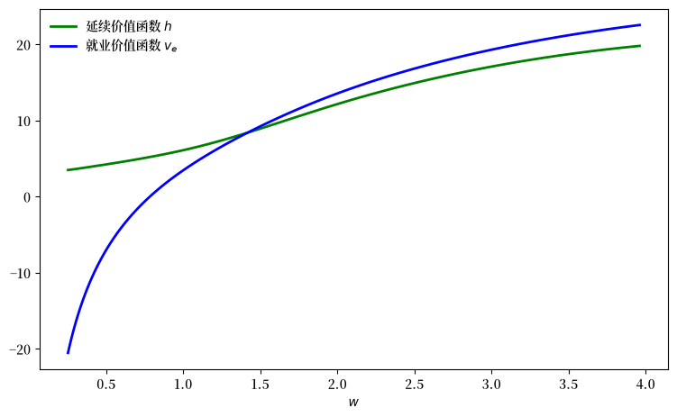
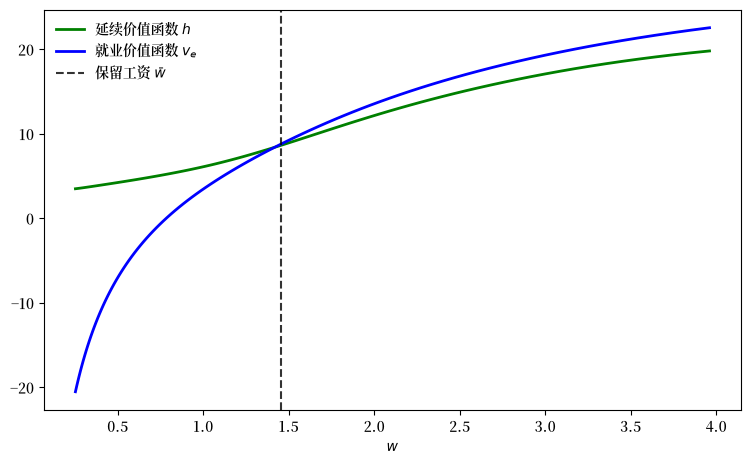
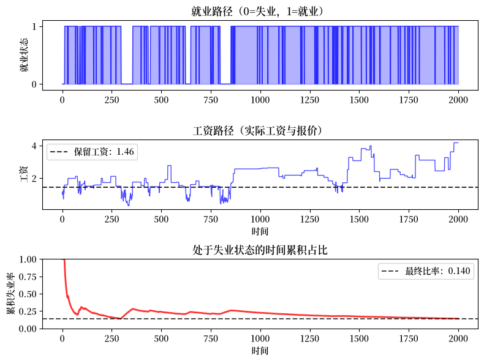
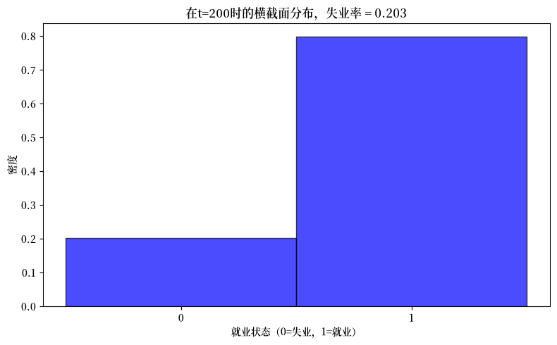
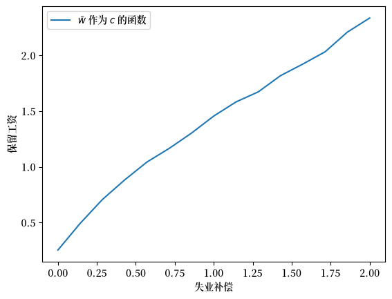
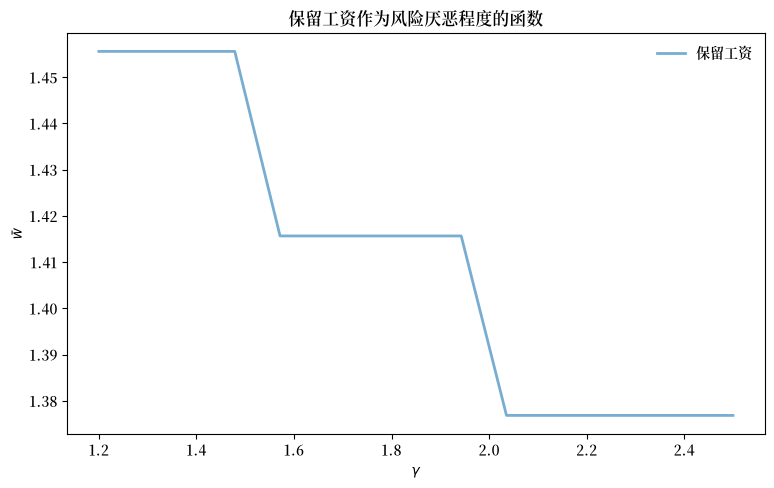

56. 工作搜寻 IV: 拟合值函数迭代#
GPU
本讲座是在配有GPU的机器上构建的——不过没有GPU也可以运行。
Google Colab 提供带GPU的免费套餐，使用方法如下：
点击右上角的”播放”图标
选择 Colab
将运行时环境设置为包含GPU
56.1. 概述#
本讲座延续了前一讲中介绍的带有离职情形的工作搜寻模型。
那一讲将外生的工作离职事件与马尔可夫工资报价过程结合了起来。
在本讲座中，我们延续这一设定，此外还允许工资报价过程是连续的而非离散的。
具体而言，
且\(\{Z_t\}\)是独立同分布的标准正态随机变量。
虽然我们在工作搜寻 I: McCall搜寻模型中已经简要讨论过连续工资分布，但在那个案例中，这种改变相对来说是微不足道的。
这是因为我们能够将问题简化为求解单个标量值（延续价值）。
在这里，即在我们的马尔可夫设定下，变化不再那么简单，因为连续工资分布会导致不可数的无限状态空间。
无限状态空间带来了额外的挑战，特别是在应用值函数迭代（VFI）时。
这些挑战会促使我们通过添加插值这一步骤，来改进VFI方法。
VFI和这个插值步骤的结合被称为拟合值函数迭代（拟合 VFI）。
拟合VFI在实践中非常常见，所以我们将花一些时间来详细研究。
除了Anaconda中已包含的库外，本讲座还需要以下库
!pip install quantecon jax
我们将使用以下导入：
import matplotlib.pyplot as plt
import matplotlib as mpl
FONTPATH = "fonts/SourceHanSerifSC-SemiBold.otf"
mpl.font_manager.fontManager.addfont(FONTPATH)
plt.rcParams['font.family'] = ['Source Han Serif SC']
import jax
import jax.numpy as jnp
from jax import lax
from typing import NamedTuple
from functools import partial
import quantecon as qe
56.2. 模型#
假设读者已经熟悉Job Search III: Search with Separation and Markov Wages的内容，该模型可以概括如下。
工资报价遵循连续的马尔可夫过程：\(W_t = \exp(X_t)\)，其中\(X_{t+1} = \rho X_t + \nu Z_{t+1}\)
\(\{Z_t\}\)是独立同分布的标准正态随机变量
工作每期以概率\(\alpha\)终止（离职率）
失业工人每期获得补偿\(c\)
工人具有CRRA效用函数\(u(x) = \frac{x^{1-\gamma} - 1}{1-\gamma}\)
未来的收益按因子\(\beta \in (0,1)\)进行折现
56.3. 求解方法#
让我们讨论一下如何求解这个模型。
与Job Search III: Search with Separation and Markov Wages相比，唯一真正的变化是我们用积分代替了求和。
56.3.1. 值函数迭代#
在离散情形中，我们最终对贝尔曼算子进行迭代
其中
这里我们对同样的方程进行迭代，只是将\(P\)算子的定义改为
其中\(p(w, \cdot)\)是给定\(w\)时\(w'\)的条件密度。
这里我们将\(v_u\)看作定义在整个\(\mathbb{R}_+\)上的函数。
设\(\psi\)为标准正态密度，我们可以将上面的表达式更明确地写为
要理解这个表达式，回想一下\(W_t = \exp(X_t)\)，其中\(X_{t+1} = \rho X_t + \nu Z_{t+1}\)。
于是\(W_{t+1} = \exp(X_{t+1}) = \exp(\rho \log(W_t) + \nu Z_{t+1}) = W_t^\rho \exp(\nu Z_{t+1})\)。
上面的积分将当前工资\(W_t\)视为固定值\(w\)，并求\(v_u(w^\rho \exp(\nu Z_{t+1}))\)的期望。
56.3.2. 拟合#
理论上，我们应该按以下步骤进行：
从一个猜测值\(v\)开始
应用\(T\)得到更新值\(v' = Tv\)
若未满足某些停止条件，则令\(v = v'\)并返回步骤2。
然而，在实施这个过程之前，我们必须面对一个问题：值函数的迭代序列既不能被精确计算，也不能被存储在计算机中。
要理解这个问题，请考察(56.1)。
即使\(v\)是一个已知函数，存储其更新值\(v'\)的唯一方法是记录其在每个\(w \in \mathbb R_+\)处的值\(v'(w)\)。
显然，这是不可能的。
56.3.3. 拟合值函数迭代#
我们将改用拟合值函数迭代的方法。
具体步骤如下：
假设当前给定猜测值函数 \(v\)。
我们只在有限个”网格”点 \(w_1 < w_2 < \cdots < w_I\) 上记录函数 \(v'\) 的值，然后在需要时根据这些信息重构 \(v'\)。
更具体地说，这个算法是
从一个数组 \(\mathbf v\) 开始，该数组表示值函数在某些网格点 \(\{w_i\}\) 上的初始猜测值。
基于 \(\mathbf v\) 和 \(\{w_i\}\)，通过插值法或近似法在状态空间 \(\mathbb R_+\) 上构建函数 \(v\)。
在每个网格点 \(w_i\) 上获取并记录更新后的函数 \(v'(w_i)\) 的样本。
若未满足某些停止条件，则将其作为新数组并返回步骤1。
我们应该如何处理步骤2？
这是一个函数近似问题，有很多种方法可以解决。
对于函数近似方案，我们需要考虑两个关键点：一是要能够准确地近似每个\(v\)，二是要能够有效地融入到上述整个迭代算法中。
从这两个方面来看，连续分段线性插值法是一个不错的选择。
这种方法
能够很好地配合值函数迭代（参见[Gordon, 1995]或[Stachurski, 2008]），并且
能保持关键的形状特性，如单调性和凹凸性。
线性插值将通过JAX的插值函数jnp.interp来实现。
下图展示了在网格点\(0, 0.2, 0.4, 0.6, 0.8, 1\)上对任意函数进行分段线性插值的情况。
def f(x):
y1 = 2 * jnp.cos(6 * x) + jnp.sin(14 * x)
return y1 + 2.5
c_grid = jnp.linspace(0, 1, 6)
f_grid = jnp.linspace(0, 1, 150)
def Af(x):
return jnp.interp(x, c_grid, f(c_grid))
fig, ax = plt.subplots()
ax.plot(f_grid, f(f_grid), 'b-', label='真实函数')
ax.plot(f_grid, Af(f_grid), 'g-', label='线性近似')
ax.vlines(c_grid, c_grid * 0, f(c_grid), linestyle='dashed', alpha=0.5)
ax.legend(loc="upper center")
ax.set(xlim=(0, 1), ylim=(0, 6))
plt.show()
findfont: Failed to find font weight normal, now using 600.

56.4. 实现#
让我们编写代码并求解该模型。
56.4.1. 准备工作#
第一步，是为具有离职情况和连续工资报价分布的McCall模型构建一个与JAX兼容的数据结构。
关键的计算挑战是在每个工资网格点上计算条件期望 \((Pv_u)(w) = \int v_u(w') p(w, w') dw'\)。
回想一下我们有：
其中\(\psi\)是标准正态密度。
我们将使用来自标准正态分布的抽样\(\{Z_i\}\)通过蒙特卡洛积分来近似这个积分：
因此，我们的数据结构将包含一组固定的独立同分布\(N(0,1)\)抽样\(\{Z_i\}\)。
class Model(NamedTuple):
c: float # 失业补偿
α: float # 离职率
β: float # 折现因子
ρ: float # 工资持续性
ν: float # 工资波动性
γ: float # 效用函数参数
w_grid: jnp.ndarray # 用于拟合VFI的网格点
z_draws: jnp.ndarray # 来自标准正态分布的抽样
def create_mccall_model(
c: float = 1.0,
α: float = 0.05,
β: float = 0.96,
ρ: float = 0.9,
ν: float = 0.2,
γ: float = 1.5,
grid_size: int = 100,
mc_size: int = 1000,
seed: int = 1234
):
"""创建McCall模型实例的工厂函数。"""
key = jax.random.PRNGKey(seed)
z_draws = jax.random.normal(key, (mc_size,))
# 离散化只是为了获得适用于插值的合适工资网格
mc = qe.markov.tauchen(grid_size, ρ, ν)
w_grid = jnp.exp(jnp.array(mc.state_values))
return Model(c, α, β, ρ, ν, γ, w_grid, z_draws)
我们使用与离散情形相同的CRRA效用函数：
def u(x, γ):
return (x**(1 - γ) - 1) / (1 - γ)
56.4.2. 迭代#
以下是贝尔曼算子，我们用蒙特卡洛积分来计算期望值。
def T(model, v):
"""更新值函数。"""
# 拆解模型参数
c, α, β, ρ, ν, γ, w_grid, z_draws = model
# 对用数组表示的值函数进行插值
vf = lambda x: jnp.interp(x, w_grid, v)
def compute_expectation(w):
# 使用蒙特卡洛方法计算积分 (P v)(w) = E[v(W' | w)]
# 其中 W' = w^ρ * exp(ν * Z)
w_next = w**ρ * jnp.exp(ν * z_draws)
return jnp.mean(vf(w_next))
compute_exp_on_grid = jax.vmap(compute_expectation)
Pv = compute_exp_on_grid(w_grid)
d = 1 / (1 - β * (1 - α))
v_e = d * (u(w_grid, γ) + α * β * Pv)
continuation_values = u(c, γ) + β * Pv
return jnp.maximum(v_e, continuation_values)
以下是求解器，用于计算\(T\)的近似不动点\(v_u\)。
@jax.jit
def vfi(
model: Model,
tolerance: float = 1e-6, # 误差容限
max_iter: int = 100_000, # 最大迭代次数
):
"""
计算T的不动点v_u。
"""
v_init = jnp.zeros(model.w_grid.shape)
def cond(loop_state):
v, error, i = loop_state
return (error > tolerance) & (i <= max_iter)
def update(loop_state):
v, error, i = loop_state
v_new = T(model, v)
error = jnp.max(jnp.abs(v_new - v))
new_loop_state = v_new, error, i + 1
return new_loop_state
initial_state = (v_init, tolerance + 1, 1)
final_loop_state = lax.while_loop(cond, update, initial_state)
v_final, error, i = final_loop_state
return v_final
以下是一个函数，利用求得的解\(v_u\)来计算我们感兴趣的其余函数：\(v_e\)，以及延续价值函数\(h\)。
在将求和替换为积分之后，我们使用与离散情形中相同的表达式。
def compute_solution_functions(model, v_u):
# 拆解模型参数
c, α, β, ρ, ν, γ, w_grid, z_draws = model
# 在工资网格上对v_u进行插值
vf = lambda x: jnp.interp(x, w_grid, v_u)
def compute_expectation(w):
# 使用蒙特卡洛方法计算积分 (P v)(w)
# 计算 E[v(w' | w)]，其中 w' = w^ρ * exp(ν * z)
w_next = w**ρ * jnp.exp(ν * z_draws)
return jnp.mean(vf(w_next))
compute_exp_on_grid = jax.vmap(compute_expectation)
Pv = compute_exp_on_grid(w_grid)
d = 1 / (1 - β * (1 - α))
v_e = d * (u(w_grid, γ) + α * β * Pv)
h = u(c, γ) + β * Pv
return v_e, h
让我们试着求解该模型：
model = create_mccall_model()
c, α, β, ρ, ν, γ, w_grid, z_draws = model
v_u = vfi(model)
v_e, h = compute_solution_functions(model, v_u)
让我们绘制结果。
fig, ax = plt.subplots(figsize=(9, 5.2))
ax.plot(w_grid, h, 'g-', linewidth=2,
label="延续价值函数 $h$")
ax.plot(w_grid, v_e, 'b-', linewidth=2,
label="就业价值函数 $v_e$")
ax.legend(frameon=False)
ax.set_xlabel(r"$w$")
plt.show()
findfont: Failed to find font weight normal, now using 600.

保留工资位于就业价值函数\(v_e\)和延续价值函数\(h\)的交点处。
以下是一个用来明确计算它的函数。
@jax.jit
def get_reservation_wage(model: Model) -> float:
"""
计算给定模型的保留工资。
"""
c, α, β, ρ, ν, γ, w_grid, z_draws = model
v_u = vfi(model)
v_e, h = compute_solution_functions(model, v_u)
# 计算最优策略（接受指标）
σ = v_e >= h
# 找到策略指示接受的第一个索引
first_accept_idx = jnp.argmax(σ) # 返回第一个为True的值
# 若没有接受（全部为False），返回无穷大
# 否则返回第一个接受索引处的工资
return jnp.where(jnp.any(σ), w_grid[first_accept_idx], jnp.inf)
让我们重新绘制图形，这次加上保留工资。
w_bar = get_reservation_wage(model)
fig, ax = plt.subplots(figsize=(9, 5.2))
ax.plot(w_grid, h, 'g-', linewidth=2,
label="延续价值函数 $h$")
ax.plot(w_grid, v_e, 'b-', linewidth=2,
label="就业价值函数 $v_e$")
ax.axvline(x=w_bar, color='black', linestyle='--', alpha=0.8,
label=f'保留工资 $\\bar{{w}}$')
ax.legend(frameon=False)
ax.set_xlabel(r"$w$")
plt.show()

56.5. 模拟#
现在我们进行一些模拟，重点关注失业率。
56.5.1. 单个个体的动态#
让我们模拟单个个体在最优策略下的就业路径。
我们需要一个函数，用来将个体的状态更新一期。
def update_agent(key, status, wage, model, w_bar):
"""
将个体的就业状态和当前工资更新一期。
参数：
- key：JAX随机数生成密钥
- status：当前就业状态（0或1）
- wage：若已就业，为当前工资；若失业，为当前报价
- model：模型实例
- w_bar：保留工资
"""
c, α, β, ρ, ν, γ, w_grid, z_draws = model
# 根据当前工资抽取新的工资报价
key1, key2 = jax.random.split(key)
z = jax.random.normal(key1)
new_wage = wage**ρ * jnp.exp(ν * z)
# 检查是否发生离职（针对已就业工人）
separation_occurs = jax.random.uniform(key2) < α
# 若当前工资达到或超过保留工资，则接受
accepts = wage >= w_bar
# 若已就业：若无离职则status = 1，若离职则status = 0
# 若失业：若接受则status = 1，若拒绝则status = 0
next_status = jnp.where(
status,
1 - separation_occurs.astype(jnp.int32), # 已就业路径
accepts.astype(jnp.int32) # 失业路径
)
# 若已就业：若无离职则工资为当前值，若离职则为新工资
# 若失业：若接受则工资为当前值，若拒绝则为新工资
next_wage = jnp.where(
status,
jnp.where(separation_occurs, new_wage, wage), # 已就业路径
jnp.where(accepts, wage, new_wage) # 失业路径
)
return next_status, next_wage
以下是一个函数，用来模拟单个个体的就业路径。
def simulate_employment_path(
model: Model, # 模型详情
w_bar: float, # 保留工资
T: int = 2_000, # 模拟长度
seed: int = 42 # 设定模拟的随机种子
):
"""
从失业状态开始，模拟T期的就业路径。
"""
key = jax.random.PRNGKey(seed)
c, α, β, ρ, ν, γ, w_grid, z_draws = model
# 初始条件：从失业状态开始，并给定初始工资抽样
status = 0
key, subkey = jax.random.split(key)
wage = jnp.exp(jax.random.normal(subkey) * ν)
wage_path = []
status_path = []
for t in range(T):
wage_path.append(wage)
status_path.append(status)
key, subkey = jax.random.split(key)
status, wage = update_agent(
subkey, status, wage, model, w_bar
)
return jnp.array(wage_path), jnp.array(status_path)
让我们绘制一个全面展示就业模拟情况的图：
model = create_mccall_model()
w_bar = get_reservation_wage(model)
wage_path, employment_status = simulate_employment_path(model, w_bar)
fig, (ax1, ax2, ax3) = plt.subplots(3, 1, figsize=(8, 6))
# 绘制就业状态
ax1.plot(employment_status, 'b-', alpha=0.7, linewidth=1)
ax1.fill_between(
range(len(employment_status)), employment_status, alpha=0.3, color='blue'
)
ax1.set_ylabel('就业状态')
ax1.set_title('就业路径（0=失业，1=就业）')
ax1.set_yticks((0, 1))
ax1.set_ylim(-0.1, 1.1)
# 绘制工资路径及保留工资
ax2.plot(wage_path, 'b-', alpha=0.7, linewidth=1)
ax2.axhline(y=w_bar, color='black', linestyle='--', alpha=0.8,
label=f'保留工资：{w_bar:.2f}')
ax2.set_xlabel('时间')
ax2.set_ylabel('工资')
ax2.set_title('工资路径（实际工资与报价）')
ax2.legend()
# 绘制失业时间的累积占比
unemployed_indicator = (employment_status == 0).astype(int)
cumulative_unemployment = (
jnp.cumsum(unemployed_indicator) /
jnp.arange(1, len(employment_status) + 1)
)
ax3.plot(cumulative_unemployment, 'r-', alpha=0.8, linewidth=2)
ax3.axhline(y=jnp.mean(unemployed_indicator), color='black',
linestyle='--', alpha=0.7,
label=f'最终比率：{jnp.mean(unemployed_indicator):.3f}')
ax3.set_xlabel('时间')
ax3.set_ylabel('累积失业率')
ax3.set_title('处于失业状态的时间累积占比')
ax3.legend()
ax3.set_ylim(0, 1)
plt.tight_layout()
plt.show()
findfont: Failed to find font weight normal, now using 600.

模拟结果显示，个体在就业和失业之间不断切换。
个体从失业状态开始，并根据马尔可夫过程收到工资报价。
失业时，个体接受超过保留工资的报价。
就业时，个体每期都以概率\(\alpha\)面临失业风险。
56.5.2. 横截面分析#
现在让我们同时模拟多个个体，来考察横截面失业率。
要高效地做到这一点，我们需要一种与上面定义的simulate_employment_path不同的方法。
关键区别在于：
simulate_employment_path记录单个个体的完整历史（所有T期），这对可视化很有用，但很耗内存下面的新函数
sim_agent只跟踪并返回最终状态，而这正是我们计算横截面统计量所需要的全部信息sim_agent使用lax.fori_loop而不是Python循环，这使得它可以被JIT编译，并适用于对多个个体进行向量化处理
我们首先定义一个函数，用来将单个个体向前模拟T个时间步：
@jax.jit
def sim_agent(key, initial_status, initial_wage, model, w_bar, T):
"""
使用lax.fori_loop将单个个体向前模拟T个时间步。
使用fold_in在每个时间步生成一个新的密钥。
参数：
- key：该个体的JAX随机数生成密钥
- initial_status：初始就业状态（0或1）
- initial_wage：初始工资
- model：模型实例
- w_bar：保留工资
- T：要模拟的时间期数
返回：
- final_status：T期后的就业状态
- final_wage：T期后的工资
"""
def update(t, loop_state):
status, wage = loop_state
step_key = jax.random.fold_in(key, t)
status, wage = update_agent(step_key, status, wage, model, w_bar)
return status, wage
initial_loop_state = (initial_status, initial_wage)
final_loop_state = lax.fori_loop(0, T, update, initial_loop_state)
final_status, final_wage = final_loop_state
return final_status, final_wage
# 创建sim_agent的向量化版本，以并行处理多个个体
sim_agents_vmap = jax.vmap(sim_agent, in_axes=(0, 0, 0, None, None, None))
def simulate_cross_section(
model: Model,
n_agents: int = 100_000,
T: int = 200,
seed: int = 42
) -> float:
"""
模拟个体的横截面，并返回失业率。
这种方法：
1. 生成n_agents个随机密钥
2. 对每个个体调用sim_agent（通过vmap向量化）
3. 收集最终状态以得出横截面
返回横截面失业率。
"""
c, α, β, ρ, ν, γ, w_grid, z_draws = model
key = jax.random.PRNGKey(seed)
# 求解最优保留工资
w_bar = get_reservation_wage(model)
# 初始化数组
init_key, subkey = jax.random.split(key)
initial_wages = jnp.exp(jax.random.normal(subkey, (n_agents,)) * ν)
initial_status_vec = jnp.zeros(n_agents, dtype=jnp.int32)
# 生成n_agents个随机密钥
agent_keys = jax.random.split(init_key, n_agents)
# 将每个个体向前模拟T步（向量化）
final_status, final_wages = sim_agents_vmap(
agent_keys, initial_status_vec, initial_wages, model, w_bar, T
)
unemployment_rate = 1 - jnp.mean(final_status)
return unemployment_rate
现在让我们比较时间平均失业率（来自单个个体的长期模拟）与横截面失业率（来自某一时点上多个个体的情况）。
model = create_mccall_model()
cross_sectional_unemp = simulate_cross_section(
model, n_agents=20_000, T=200
)
time_avg_unemp = jnp.mean(unemployed_indicator)
print(f"时间平均失业率（单个个体，T=2000）："
f"{time_avg_unemp:.4f}")
print(f"横截面失业率（在t=200时）："
f"{cross_sectional_unemp:.4f}")
print(f"差异：{abs(time_avg_unemp - cross_sectional_unemp):.4f}")
时间平均失业率（单个个体，T=2000）：0.1395
横截面失业率（在t=200时）：0.2029
差异：0.0634
通过增加单个个体的模拟长度，可以进一步缩小上述差异。
wage_path_long, employment_status_long = simulate_employment_path(model, w_bar, T=10_000)
unemployed_indicator_long = (employment_status_long == 0).astype(int)
time_avg_unemp_long = jnp.mean(unemployed_indicator_long)
print(f"时间平均失业率（单个个体，T=10000）："
f"{time_avg_unemp_long:.4f}")
print(f"横截面失业率（在t=200时）："
f"{cross_sectional_unemp:.4f}")
print(f"差异：{abs(time_avg_unemp_long - cross_sectional_unemp):.4f}")
时间平均失业率（单个个体，T=10000）：0.2071
横截面失业率（在t=200时）：0.2029
差异：0.0042
56.5.3. 可视化#
这个函数生成一个直方图，展示多个个体的就业状态分布：
def plot_cross_sectional_unemployment(
model: Model, # 带参数的模型实例
t_snapshot: int = 200, # 横截面快照的时间
n_agents: int = 20_000 # 要模拟的个体数量
):
"""
生成特定时间点的横截面失业情况的直方图。
"""
c, α, β, ρ, ν, γ, w_grid, z_draws = model
# 直接获取最终就业状态
key = jax.random.PRNGKey(42)
w_bar = get_reservation_wage(model)
# 初始化数组
init_key, subkey = jax.random.split(key)
initial_wages = jnp.exp(jax.random.normal(subkey, (n_agents,)) * ν)
initial_status_vec = jnp.zeros(n_agents, dtype=jnp.int32)
# 生成n_agents个随机密钥
agent_keys = jax.random.split(init_key, n_agents)
# 将每个个体向前模拟T步（向量化）
final_status, _ = sim_agents_vmap(
agent_keys, initial_status_vec, initial_wages, model, w_bar, t_snapshot
)
# 计算失业率
unemployment_rate = 1 - jnp.mean(final_status)
fig, ax = plt.subplots(figsize=(8, 5))
# 将直方图绘制为密度图（各柱状条加总为1）
weights = jnp.ones_like(final_status) / len(final_status)
ax.hist(final_status, bins=[-0.5, 0.5, 1.5],
alpha=0.7, color='blue', edgecolor='black',
density=True, weights=weights)
ax.set_xlabel('就业状态（0=失业，1=就业）')
ax.set_ylabel('密度')
ax.set_title(f'在t={t_snapshot}时的横截面分布，' +
f'失业率 = {unemployment_rate:.3f}')
ax.set_xticks([0, 1])
plt.tight_layout()
plt.show()
让我们绘制横截面分布图：
plot_cross_sectional_unemployment(model)

56.6. 练习#
练习 56.1
使用上面的代码来探究当 \(c\) 变化时，保留工资会发生什么变化。
解答 练习 56.1
这是一种答案
def compute_res_wage_given_c(c):
model = create_mccall_model(c=c)
w_bar = get_reservation_wage(model)
return w_bar
c_vals = jnp.linspace(0.0, 2.0, 15)
w_bar_vals = jax.vmap(compute_res_wage_given_c)(c_vals)
fig, ax = plt.subplots()
ax.set(xlabel='失业补偿', ylabel='保留工资')
ax.plot(c_vals, w_bar_vals, label=r'$\bar w$ 作为 $c$ 的函数')
ax.legend()
plt.show()

随着失业补偿的增加，保留工资也随之上升。
这在经济学上是合理的：当失业的价值上升（即更高的\(c\)）时，工人在接受工作报价时会变得更加挑剔。
练习 56.2
绘制一幅图，展示保留工资如何随风险厌恶参数\(\gamma\)变化。
使用γ_vals = jnp.linspace(1.2, 2.5, 15)，并保持其他所有参数为其默认值。
你预期保留工资会如何随\(\gamma\)变化？为什么？
解答 练习 56.2
我们针对不同的风险厌恶参数值来计算保留工资：
γ_vals = jnp.linspace(1.2, 2.5, 15)
w_bar_vec = jnp.empty_like(γ_vals)
for i, γ in enumerate(γ_vals):
model = create_mccall_model(γ=γ)
w_bar = get_reservation_wage(model)
w_bar_vec = w_bar_vec.at[i].set(w_bar)
fig, ax = plt.subplots(figsize=(9, 5.2))
ax.plot(γ_vals, w_bar_vec, linewidth=2, alpha=0.6,
label='保留工资')
ax.legend(frameon=False)
ax.set_xlabel(r'$\gamma$')
ax.set_ylabel(r'$\bar{w}$')
ax.set_title('保留工资作为风险厌恶程度的函数')
plt.show()

随着风险厌恶程度（\(\gamma\)）的增加，保留工资会下降。
这是因为风险厌恶程度更高的工人，相对于继续搜寻工作所带来的不确定性，会更看重就业所带来的稳定性。
当\(\gamma\)更高时，失业带来的效用损失（即放弃的消费）会更加严重，这使得工人更愿意接受较低的工资，而不是继续搜寻。